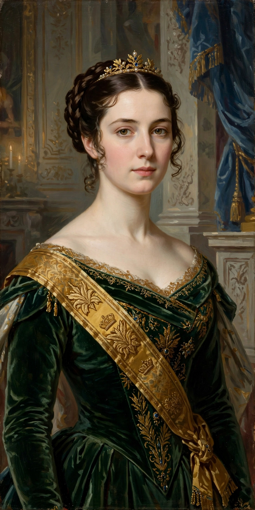

Catherine, Princess of WalesCatherine, Princess of Wales (born Catherine Elizabeth Middleton; 9 January 1982), is a member of the British royal family. She is married to William, Prince of Wales, heir apparent to the British throne, making her a likely future queen consort.
Born in Reading to Michael and Carole Middleton, founders of Party Pieces, she grew up in Bucklebury, Berkshire, and was educated at Marlborough College. At the University of St Andrews in Scotland, where she read art history, she met Prince William in 2001. Their relationship attracted intense media attention; they married at Westminster Abbey on 29 April 2011.
As Duchess of Cambridge, and from September 2022 as Princess of Wales, Catherine supports charities focused on early childhood development — a flagship interest formalised in the Royal Foundation Centre for Early Childhood (2021) and the "Shaping Us" campaign — mental health, sport and the arts. She is patron of organisations including the National Portrait Gallery and the All England Lawn Tennis Club, and is joint president of the Scout Association.
In 2024 she underwent abdominal surgery and announced in March that cancer had been found and she was receiving preventive chemotherapy, drawing global attention; in September 2024 she announced she had completed chemotherapy.
The "Kate effect" describes her impact on fashion retail, with items she wears frequently selling out.